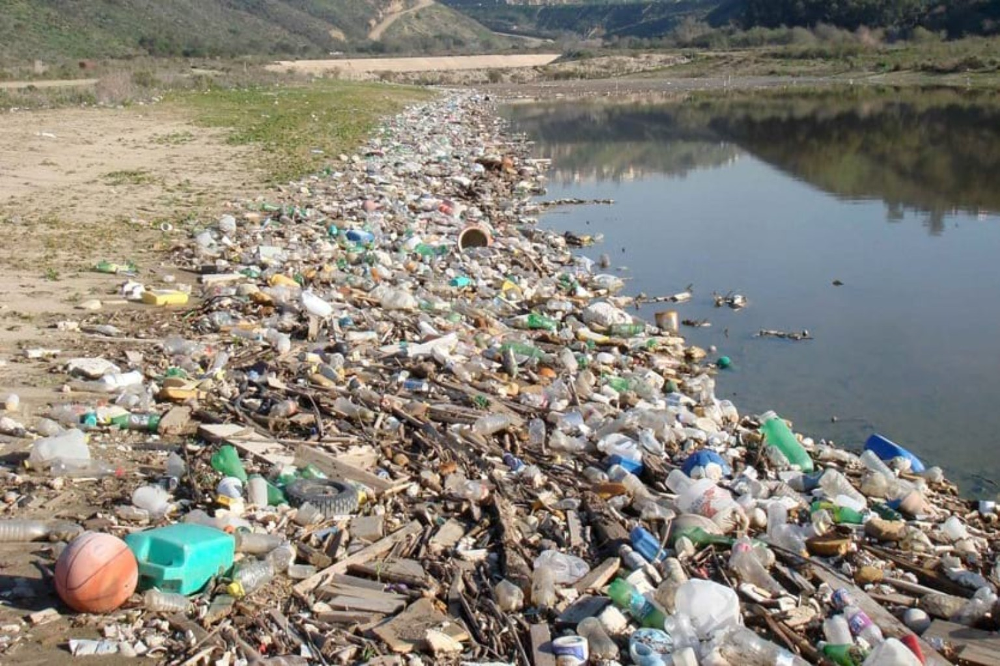

Humanity generates about 2.1 billion metric tons of municipal solid waste each year. Converted to U.S. pounds, that's about 4.63 trillion pounds.
UNEP — “Zero Waste 101” ↗
THE BIN IS NOT THE END.
You threw it away.
You threw it away.
It went somewhere.
Your contact with it ended. Its consequences didn't. What leaves your hands can enter somebody else's water, another animal's habitat, and the world we all still live inside.

Goat Canyon Basin, Tijuana River, San Diego, California · Credit: Tijuana River National Estuarine Research Reserve · Source: NOAA
ESTIMATED GLOBAL MUNICIPAL WASTE GENERATED WHILE THIS PAGE IS OPEN
0 lb
Calculated from UNEP's estimate of 2.1 billion metric tons per year. That's roughly 146,800 pounds every second worldwide.
UNEP — “Zero Waste 101” ↗
ESSENTIAL VIEWING
Watch. Then decide.
Choose one. You don't need to watch everything today. You only need to stop looking away. This section contains films only; research and practical resources will have their own dedicated area.
THIS IS PERSONAL
Your home does not end at your front door.
The water beyond your faucet is home. The soil beyond your yard is home. The air beyond your walls is home. Mother Earth is not somewhere else. Every object we extract, buy, use, repair, reuse or discard remains part of the same world that keeps us alive.
“Away” is a place we stop looking.
THE DISTANCE IS THE ILLUSION.
There is no environment
separate from you.
We call it “away” when it leaves our hands. A landfill. A river. An ocean. Another neighborhood. Another country. Another generation. Distance makes consequences easier to ignore. Distance does not make them disappear.
YOUR HANDS
→
WASTE
→
LAND + WATER
→
LIFE
→
US
THE REAL DEAL
Look at the scale.
Plain English first. The original report is always one tap away.
The U.S. generated an average of about 4.9 pounds of municipal solid waste per person per day in EPA's 2018 national dataset.
EPA — “National Overview” ↗EPA reports 146.1 million U.S. tons were landfilled in 2018. That's about 292.2 billion pounds.
EPA — “Facts and Figures about Materials, Waste and Recycling” ↗UNEP's approach starts upstream: prevent and reduce waste, reuse and repair products, then recycle appropriate materials when they can no longer be reused.
UNEP — “Zero Waste 101” ↗
QUESTION THE JUSTIFICATION
What's your excuse?
Pick one. Zerra gives you the quick answer, then lets you go deeper.
YOUR NEXT MOVE
Do one real thing.
A button should lead somewhere. Pick an action and Zerra will give you a concrete first step.
Look in your trash.
Find what appears again and again.
Refuse before replacing.
Stop waste before it enters your life.
Use what exists.
Reuse, borrow, share and repair first.
Handle the remainder.
Compost and recycle correctly.
DON'T KNOW YOUR LOCAL RULES?
Start with your city or county.
Search your city or county website for recycling , solid waste , yard waste , compost or household hazardous waste . Your local hauler can also tell you exactly what your curbside program accepts. Do not assume the recycling symbol means an item belongs in your local bin.
EPA — How Do I Recycle Common Recyclables? ↗
There is no “away.”
There is only home.
Inform yourself. Change what you can. Repeat it. Share what you learn. Support better systems. A healthier relationship with Mother Earth is built through what we repeatedly choose to do.
YOU KNOW WHERE “AWAY” GOES NOW.
What happens next is a choice.
You don't have to become perfect. You don't have to change everything overnight. But once you understand where things come from, where they go, and who or what carries the consequences, you can choose differently.
WHY CARE? / START WHERE YOU ARE
You don't have to care about “the planet” as an abstract idea.
Care about your money? Your water? Your food? Your neighborhood? Jobs? What your kids inherit? Start there. Waste is not an isolated environmental topic. It is a materials, money, infrastructure and quality-of-life issue.
I care about what things cost.
Waste prevention can save money because the cheapest thing to replace is often the thing you never had to replace. EPA explicitly places refusing, reducing, reusing and repairing ahead of recycling and notes that waste prevention can save consumers money.
EPA: waste actions ↗I care whether we keep useful materials.
Recycling and reuse can reduce demand for newly extracted raw materials and keep materials in productive use. EPA describes sustainable materials management as a life-cycle approach to using and reusing materials more productively.
EPA: materials management ↗I care about work and economic activity.
EPA's 2020 Recycling Economic Information report, using 2012 economic data, attributed 681,000 U.S. jobs, $37.8 billion in wages and $5.5 billion in tax revenue to recycling and reuse activities. Those figures are historical measurements, not current-year employment estimates.
EPA REI report ↗I care what ends up around me.
EPA identifies source reduction, reuse, recycling and composting as ways to reduce pollution, conserve resources and reduce material sent to landfills or combustion.
EPA waste hierarchy ↗I care about where I live.
Donation, repair, reuse, community composting and local recovery programs can keep useful materials circulating locally instead of treating every unwanted object as garbage.
EPA community actions ↗I care whether tomorrow has options.
Materials have life cycles. Preventing waste, extending useful life and recovering materials preserve more options than immediately converting useful resources into disposal problems.
THE POINT
You don't need one particular reason to care.
Environmental ethics can be your reason. So can money, independence, cleaner communities, useful materials, public costs or simple dislike of wasting things. Zerra gives you the evidence and lets you decide what matters to you.
LEARN / THE MATERIAL WORLD
There is no “away.”
The bin hides a system. Extraction, manufacturing, consumption, collection and disposal are connected stages of the same material story. Understanding waste means following that story beyond the moment we stop seeing it.
THIS SECTION ANSWERS
What is actually happening?
Learn explains the systems behind waste: where materials go, why disposability became normal, what different waste streams do, and where prevention matters. When you want the underlying receipts rather than another explanation, go to Evidence.
Global municipal solid waste generated annually, with UNEP projecting roughly 3.8 billion metric tonnes by 2050 without urgent action.
UNEP · Global Waste Management Outlook 2024 ↗U.S. municipal solid waste generation in EPA's latest national dataset, covering 2018.
U.S. EPA ↗About half of U.S. municipal solid waste in EPA's 2018 dataset was landfilled: roughly 146.2 million U.S. tons.
U.S. EPA ↗
01 / FOLLOW THE OBJECT
Waste begins before the trash can.
A discarded object already carries the material and energy used to extract its inputs, manufacture it, package it and transport it. Disposal is not the beginning of its environmental story. It is simply the point where the consumer usually stops watching.
That is why zero waste prioritizes prevention. Managing waste better matters, but preventing unnecessary material from becoming waste avoids impacts further upstream.
02 / PLASTIC
Convenience can outlive the moment that created it.
19–23M
metric tonnes / year
UNEP cites an estimated 19–23 million metric tonnes of plastic entering aquatic environments annually. Plastic pollution can move through rivers, coastlines and oceans rather than remaining where it was discarded.
Explore the UNEP evidence ↗
03 / FOOD
Throwing away food throws away everything used to produce it.
1.05B
metric tonnes in 2022
UNEP estimates that 1.05 billion metric tonnes of food were wasted at household, food-service and retail levels in 2022. Households accounted for about 60% of that total.
UNEP Food Waste Index 2024 ↗
04 / RECYCLING
Necessary is not the same as sufficient.
EPA's 2018 U.S. dataset reports about 69 million tons recycled and 24.9 million tons composted, together representing 32.1% of municipal solid waste generation. Recycling remains useful, but it operates after materials have already been produced and consumed.
The hierarchy matters: prevent unnecessary waste first, extend useful life, recover materials appropriately, and dispose only what remains.
EPA recycling guidance ↗
THE QUESTION CHANGES
Not “Where do I throw this?”
Not “Where do I throw this?”
but “Why did this become waste?”
RECONNECT / RELATIONSHIP · RECIPROCITY · RESPONSIBILITY
Knowing we belong here changes what responsibility means.
Reconnection means recognizing relationships, consequences and obligations. Zerra separates three ideas that often get blended together: stewardship, reciprocity and responsibility.
Care for what sustains life.
Stewardship asks how land, water, living communities and material systems should be cared for rather than treated only as things to consume.
What do we return?
Reciprocity challenges a one-way relationship of taking. It asks what humans give back through care, restoration, restraint, protection and renewal.
What follows from our consequences?
If our choices create waste, pollution or harm beyond our sight, understanding those consequences gives us reason to change the choices and systems producing them.
Your trash does not stop existing because you stop seeing it.
Your water does not begin at the faucet.
Your food does not begin at the store.
Your responsibility does not end at the property line.
HOPI / HOPITUTSKWA
Stewardship described by the Hopi Tribe itself.
The Hopi Tribe's Wildlife & Ecosystems Management Program describes a covenant with Maasaw and an obligation to be worthy stewards of Hopitutskwa. The Tribe's account names reverence for land, sky, rocks, soil, streams, springs, plants and animals, and describes obligation and responsibility toward plants and animals.
PRIMARY SOURCE
The Hopi Tribe · Wildlife & Ecosystems Management Program
Read the Hopi Tribe's words directly ↗Why Zerra includes this: to show a specific, named people describing stewardship and responsibility in its own institutional source—not to turn Hopi teachings into a generic slogan.
DINÉ / NATURAL LAW
Responsibility is explicitly written into Diné law.
The Navajo Nation's Fundamental Laws state that air, light/fire, water and earth/pollen must be respected, honored and protected because they sustain life. Diné Natural Law describes an obligation and duty to respect, preserve and protect creation and states a responsibility to protect the natural world for future generations.
PRIMARY SOURCE
Judicial Branch of the Navajo Nation · Fundamental Laws of the Diné, §205
Read Diné Natural Law directly ↗Why Zerra includes this: the language of stewardship, duty, protection and future generations comes from the Navajo Nation's own codified law.
INDIGENOUS KNOWLEDGE / SOURCE DISCIPLINE
The umbrella term is real. It is not permission to homogenize.
The U.S. Department of the Interior has formal policy and guidance for respecting and including Indigenous Knowledge in decision-making, resource management and scientific research. Its guidance emphasizes engagement with Tribal Nations, Indigenous communities and Knowledge Holders.
GOVERNMENT GUIDANCE
U.S. Department of the Interior · Indigenous Knowledge Handbook
Review DOI guidance ↗Zerra rule: identify the Nation or people, identify the specific teaching, practice or documented statement, explain its context, and link to the Indigenous or Tribal source whenever possible.
KNOWLEDGE → RESPONSIBILITY
Seeing the consequence changes the question.
1
What did I take?
Materials, energy, land, water, labor, biological resources.
2
What consequence followed?
Waste, emissions, pollution, habitat pressure, or a material that must now be managed.
3
Who or what carries it?
Households, communities, workers, wildlife, waterways, ecosystems, or future generations.
4
What can change?
Prevent, reduce, reuse, repair, recover correctly, restore, advocate, and redesign the system.
MODERN WASTE / SCALE
Responsibility also belongs to systems.
2.1B → 3.8B
tonnes of municipal solid waste
UNEP projects global municipal solid waste generation rising from roughly 2.1 billion tonnes to about 3.8 billion tonnes by 2050 without urgent action. Its report addresses action by governments, municipalities, producers, retailers, the waste sector and citizens.
GLOBAL EVIDENCE
UN Environment Programme · Global Waste Management Outlook 2024
Inspect the report ↗Why this matters: a global material system should not be framed as if household behavior alone created or can solve it. Personal and institutional responsibilities operate at different scales.
ZERRA'S STANDARD
Claim → context → evidence → original source → meaning → responsibility → action.
Follow the source. Check who said it, what was measured or taught, where and when it applies, and what the evidence actually supports.
FROM RELATIONSHIP TO PRACTICE
Responsibility means the story cannot end with awareness.
ACT / PRACTICE
Zero waste is a direction, not a purity test.
The goal is not to buy a house full of products labeled “eco.” It is to prevent unnecessary waste, keep useful materials in use, choose better systems when replacement is actually needed, and dispose responsibly when prevention is no longer possible.
Refuse
Decline unnecessary disposables, packaging, promotional items and purchases you do not actually need.
Reduce
Use less material and choose systems that require fewer repeated inputs.
Reuse
Keep containers, tools, textiles and other useful goods circulating.
Repair
Maintain and fix what can reasonably remain useful rather than treating replacement as automatic.
Compost
Where local systems and conditions allow, return suitable organic material to biological cycles.
Recycle right
Follow local rules. Wish-cycling can contaminate collection streams; accepted materials differ by program.
START HERE
Audit one ordinary day.
Look at what enters your home and what leaves it. Which items are repeatedly disposable? Which purchases create packaging you immediately discard? What food is wasted? What could have been reused, repaired, borrowed or avoided?
A trash audit turns an abstract environmental problem into visible decisions you can actually change.
REPLACEMENT WITHOUT CONSUMERISM
Sometimes the best “eco product” is no product.
Use what you already own first. When something genuinely needs replacement, think in functions rather than trends: washable cloth instead of repeated paper towels, plant loofah or a durable scrub brush instead of a short-lived plastic sponge, repairable containers instead of repeated disposables, or a long-lived scrubber appropriate for cookware that can tolerate it.
The principle is durability, safety, repairability and lower material throughput—not buying a green-looking version of everything you already own.
LOCAL RULES MATTER
There is no universal recycling bin.
Check your city or county solid-waste program and your local hauler for accepted curbside materials. Use local household-hazardous-waste programs for materials that do not belong in ordinary trash or recycling. Compost availability also varies by community.
Zerra can teach the decision process; specialized local programs should tell you the final destination.
DON'T STOP AT PERSONAL HABITS
Individual practice and better systems can reinforce each other.
BEYOND “LESS TRASH”
Participate differently in the systems that sustain you.
Zerra gives you the direction. Specialized resources can teach the full skill.
Return nutrients.
Learn the basic role of composting, then use local and specialist guidance for methods, accepted materials and troubleshooting.
EPA composting guidance ↗Participate in food production.
Soil gardens, containers, community gardens and hydroponics are different approaches. Zerra points toward them without pretending one method fits every home or climate.
USDA urban agriculture resources ↗Give something back.
Compost, habitat support, appropriate nutrient recovery, restoration and stewardship shift the question from only “How little can I take?” toward “What can I return?”
Use water deliberately.
Efficiency, leak prevention and appropriate water-saving fixtures can reduce unnecessary use. Local conditions and regulations matter for rainwater and greywater systems.
EPA WaterSense ↗Efficiency before equipment.
Reducing wasted energy is part of the picture; renewable electricity, community programs and home systems are deeper branches users can explore when relevant.
U.S. DOE Energy Saver ↗Access can replace ownership.
Libraries, tool lending, makerspaces, sewing classes and repair communities can provide equipment and skills without every household buying every object.
REFUSE · REDUCE · REUSE · REPAIR · SHARE · RECOVER · COMPOST · GROW · RETURN · CONSERVE · RECYCLE
WHAT DO I DO WITH THIS?
Trash should be the last question, not the first.
Start at the top. Move downward only when the earlier option genuinely does not work.
KEEP
REPAIR
SELL
GIVE
SHARE
REPURPOSE
RECOVER
COMPOST
RECYCLE
SPECIAL HANDLING
DISPOSE LAST
Sell it or pass it on.
Clothing, furniture, tools, books, electronics and appliances may have resale, donation, parts or reuse value before they become waste.
Some “trash” is a commodity.
Metals, electronics and some commercial-volume materials can have recovery value. Whether anyone pays a household for a particular material depends on local buyers, quantity, quality and market conditions.
Recover nutrients where appropriate.
Food and yard materials may be compostable under local rules. Human waste is a specialized sanitation and resource-recovery subject—not ordinary home recycling.
Even urine can be a recoverable nutrient stream.
Rich Earth Institute operates a community-scale U.S. urine nutrient recycling program that collects, treats and applies recovered nutrients to farmland. This is a controlled program example, not instructions to handle human waste yourself.
Rich Earth Institute ↗
FIND IT NEAR ME
Search what's actually around you.
For local businesses and community services, Zerra now opens a Google Maps “near me” search because its listings are often more complete. OpenStreetMap remains available as an alternative when you prefer community-maintained mapping.
Choose a category to search Google Maps near your current location.
OpenStreetMap is community-maintained and privacy-friendlier for this use, but local business/service coverage can be incomplete. The alternate search below uses your browser location and nearby OpenStreetMap data.
Map listings can be incomplete or outdated on any platform. Verify hours, eligibility, accepted materials and services directly with the destination.
EVIDENCE / THE RECEIPTS
Don't take Zerra's word for it.
This section exists to verify claims, not repeat the lesson. Search the numbers, read the context, and open the original source.
THIS SECTION ANSWERS
Can you prove it?
Different agencies measure different things in different years and units. Zerra keeps those boundaries visible instead of blending unrelated statistics into one dramatic number.
~2.1 billion tonnes annually
Context: UNEP's Global Waste Management Outlook 2024 says municipal solid waste generation is around 2.1 billion tonnes per year and could rise to 3.8 billion tonnes by 2050 without urgent action.
UNEP — original report ↗4.9 lb per person per day
Context: EPA's national overview reports 292.4 million U.S. tons of municipal solid waste generated in 2018, equal to 4.9 pounds per person per day.
EPA — national overview ↗~146.1 million tons landfilled
Context: EPA reports that about half of U.S. municipal solid waste generated in 2018 was landfilled.
EPA — national overview ↗19–23 million tonnes annually
Context: UNEP reports that an estimated 19–23 million tonnes of plastic waste leak into aquatic ecosystems each year.
UNEP — technical overview ↗1.05 billion tonnes in 2022
Context: UNEP's Food Waste Index Report 2024 estimates 1.05 billion tonnes of food waste in 2022 across households, food service and retail; households accounted for about 60%.
UNEP — original report ↗~94 million tons
Context: EPA reports roughly 94 million tons of U.S. municipal solid waste were recycled or composted in 2018, a combined rate of 32.1%.
EPA — national overview ↗
No matching evidence record yet. Try a broader term.
ZERRA'S EVIDENCE RULE
Claim → context → evidence → original source.
Then Zerra can explain meaning, responsibility and action without asking you to accept a statistic on faith.
RESOURCES / FIND YOUR NEXT STEP
A gateway, not a pile of links.
Use Zerra to understand the direction, then go to specialized resources for deeper learning, repair, local disposal, lower-waste alternatives, digital tools and action. Inclusion here does not mean every claim made by a company or organization is automatically endorsed.
WATCH & LISTEN
Documentaries, investigations and conversations.
Visual and audio resources can make material systems easier to see. Zerra's Essential Viewing collection remains video-only; this directory can grow into documentaries, talks and podcasts with verified destinations.
The Story of Stuff
An accessible introduction to consumption and the material economy. Already part of Zerra's Essential Viewing collection.
Plastic Wars
FRONTLINE and NPR's investigation into plastic recycling and industry messaging. Zerra keeps the viewing experience on Home.
Zero Waste Countdown
Laura Nash's podcast explores waste reduction, circular systems, plastics, food, consumer choices and environmental issues through interviews and practical discussions.
Official site ↗Sustainable Minimalists
A podcast focused on practical sustainability, consumption and lower-waste living.
Official site ↗
READ & LEARN
Primary evidence and deeper education.
UN Environment Programme
Global evidence on waste, plastics, food waste, pollution and zero-waste systems.
Visit UNEP ↗U.S. Environmental Protection Agency
National materials and waste data plus recycling and household guidance.
Visit EPA ↗Zero Waste Home — Bea Johnson
A practical book on reducing household waste through refusing, reducing, reusing, recycling and rot/composting.
Author's book page ↗Cradle to Cradle — William McDonough & Michael Braungart
A design-focused argument for moving beyond a linear take-make-waste model toward material cycles designed for continued use.
Author's book page ↗The Story of Stuff — Annie Leonard
Expands the material-economy story from extraction and production through consumption and disposal.
Official project page ↗
REPAIR, REUSE & KEEP IT
Before replacement, ask whether it can stay useful.
iFixit
Step-by-step repair information, troubleshooting and repairability resources for electronics and other products.
Browse repair guides ↗Repair Café
Community repair events connect people with volunteers, tools and repair knowledge so broken items can potentially remain in use.
Find a Repair Café ↗
DIGITAL & TECHNOLOGY
Your digital defaults are choices too.
Open source, subscription-free and environmentally oriented are different attributes. Zerra labels them separately instead of pretending one automatically proves another.
Ecosia
Ecosia publishes monthly financial reports and project updates describing how search advertising revenue supports tree planting and restoration. Its environmental claims should be evaluated through those reports rather than a slogan.
Use Ecosia ↗ Inspect transparency reports ↗OceanHero
OceanHero says advertising revenue from searches funds collection of ocean-bound plastic and publishes an explanation of its model. Zerra presents that as OceanHero's documented claim, not an independently measured Zerra claim.
Visit OceanHero ↗ See how it says the model works ↗Open Source for Sustainability
Linux Foundation Research documents open-source projects connected with sustainability goals. Open source can enable collaboration and alternatives to proprietary systems, but open-source licensing by itself is not proof that a particular application has lower environmental impact.
Explore the research ↗AlternativeTo
Search for alternatives to software and online services, then filter by platform, license and other attributes. This is more useful than Zerra pretending a tiny hand-picked software list can cover every workflow.
Find software alternatives ↗OpenAlternative
A directory for discovering open-source alternatives to proprietary software. Verify platform support and project status at each project's official site before switching.
Browse open-source alternatives ↗Photopea
A browser-based image editor that can be useful where installing a desktop editor is inconvenient or unavailable. Included as an example of why platform and workflow matter when choosing alternatives.
Official site ↗Blender
Blender spans 3D modeling, sculpting, animation, rendering, compositing, motion tracking and video editing; Grease Pencil also supports 2D animation and 2D/3D hybrid workflows. It is shown as one powerful open-source example, not as a universal replacement for every creative workflow.
Explore Blender's features ↗
EVERYDAY ALTERNATIVES
Replace the habit before replacing the product.
USE → REPAIR → BORROW / SHARE → SECONDHAND → REPURPOSE → BUY DURABLE WHEN NEEDED
A replacement guide should reduce material throughput, not create another shopping list. Future entries will cover kitchen, cleaning, bathroom, laundry, food storage, clothing, transportation, electronics and common disposables.
Plastic sponge → longer-lived or plant-based options
Depending on the job: keep using what you own, then consider a washable cloth, plant loofah, durable scrub brush, or a long-lived scrubber appropriate for cookware that can safely tolerate it.
EarthHero
An online marketplace focused on products screened under its sustainability criteria. Buying less remains preferable to replacing usable items simply because a greener option exists.
Official store ↗Package Free
An online store focused on reusable and lower-waste household and personal-care products.
Official store ↗ThredUp
An online secondhand clothing marketplace. Reuse can extend the useful life of existing goods before new production is considered.
Official site ↗
LOCAL DIRECTION
The correct answer often depends on where you live.
City, county and hauler guidance
Use official local sources for curbside acceptance, electronics, household hazardous waste, yard waste and composting. Zerra should teach the decision; your local program determines what it actually accepts.
Community repair events
Look for repair events and community fixers before assuming a broken object has reached the end of its useful life.
Explore repair events ↗
No matching resources yet. This directory will keep growing.
SYSTEMS & FUTURES
What if the system itself were designed differently?
Individual choices happen inside larger systems. This shelf presents research, proposals and critiques about how production, consumption, resource allocation and economic institutions could operate differently. Inclusion is not Zerra's endorsement of a political or economic model; the point is to expose readers to documented approaches and let them investigate the evidence and assumptions themselves.
UNEP — Sustainable Consumption & Production
UNEP describes SCP as a systemic, life-cycle approach aimed at reducing resource use, waste and pollution while improving quality of life.
UNEP overview ↗UNEP — Circularity
A systems approach centered on reducing unnecessary material use and retaining value through reuse, repair, refurbishment, remanufacturing, repurposing and recycling.
UNEP circularity ↗Resource-Based Economy — Jacque Fresco / The Venus Project
The Venus Project describes Fresco's proposal as making goods and services available without money, credit, barter or other exchange mechanisms, with resource management, technology and access playing central roles. This is presented as the project's proposal, not as established scientific consensus.
The Venus Project's explanation ↗Utopia or Oblivion — R. Buckminster Fuller
Fuller's 1969 work explores design, technology, resources and humanity's capacity to deliberately create a viable future.
Buckminster Fuller Institute ↗The New Human Rights Movement — Peter Joseph
Joseph argues for examining structural relationships among economics, public health, inequality, ecological decline and human rights, and advocates a different socioeconomic approach.
Publisher page ↗The Zeitgeist Movement
The movement describes its focus as sustainability, systems thinking and advocacy for a post-scarcity socioeconomic model. Its own FAQ says it is now decentralized rather than a centrally coordinated organization.
Movement FAQ ↗
READ ACROSS FRAMEWORKS.
A proposal can contain useful questions without every claim or prescription being established. Zerra distinguishes institutional research, authored arguments, advocacy movements and proposed models so you can compare sources rather than being told what system to support.
SISTER PROJECT
Explore Go Vegan ↗
Go Vegan
Zerra focuses on waste, ecological responsibility and systems. Go Vegan focuses specifically on animal exploitation and the consequences of treating animals as products, including environmental dimensions of food and production systems.
RESOURCE STANDARD
What it is → what it helps with → why it's here → cost/license where relevant → environmental claim/evidence → official destination.
A useful directory tells you what is established, what an organization claims about itself, and where you can inspect the source.
STORES / BUY LESS · BUY BETTER
When you actually need something, start somewhere better.
This directory points toward reuse, secondhand, refill and lower-waste shopping resources. A store appearing here does not mean every product it sells is automatically sustainable. Zerra's first recommendation remains: use, repair, borrow, share, buy used, repurpose—then buy new when necessary.
SECONDHAND FIRST
Keep existing goods in circulation.
ThredUp
Online secondhand clothing marketplace.
Visit store ↗Back Market
Marketplace specializing in refurbished electronics from professional refurbishers.
Visit marketplace ↗
LOWER-WASTE SHOPPING
For needs you cannot meet with what already exists.
Package Free
Reusable and lower-waste household and personal-care products.
Visit store ↗EarthHero
Marketplace that screens products under its published sustainability criteria.
Visit store ↗
BEYOND STORES
Sometimes the best “store” is a community resource.
Libraries are a major example. Depending on the library system, a card may provide much more than books: digital media, computers, internet access, Wi-Fi hotspots, makerspaces, tools or equipment, classes, meeting space and other locally defined services. Tool libraries and lending libraries can let people borrow rarely needed objects instead of buying them.
Borrow before buying.
Check your local library's catalog and “Library of Things” or makerspace pages. Services vary dramatically by system, which is why Zerra should help users find their own library rather than promise a universal list of equipment.
Access without ownership.
Community tool libraries lend tools and equipment so one item can serve many households. Availability, membership rules and fees vary locally.
Useful resources should reach people.
Food pantries, community fridges and similar programs address food access while some programs also redirect edible surplus away from disposal. Eligibility and donation rules vary.
Repair and making are resources too.
Repair events, makerspaces, classes, seed libraries and community workshops can reduce the need to buy replacements by giving people access to skills, equipment and shared knowledge.
STORE STANDARD
Need first. Reuse before replacement. Claims need evidence.
Zerra should help you find useful destinations without turning environmental responsibility into another reason to consume.
FIND IT NEAR ME
Search what's actually around you.
For local businesses and community services, Zerra now opens a Google Maps “near me” search because its listings are often more complete. OpenStreetMap remains available as an alternative when you prefer community-maintained mapping.
Choose a category to search Google Maps near your current location.
OpenStreetMap is community-maintained and privacy-friendlier for this use, but local business/service coverage can be incomplete. The alternate search below uses your browser location and nearby OpenStreetMap data.
Map listings can be incomplete or outdated on any platform. Verify hours, eligibility, accepted materials and services directly with the destination.
ABOUT / WHY ZERRA EXISTS
Knowledge should give you somewhere to go.
Zerra is an evidence-led guide to lower-waste, more reciprocal and responsible living. It is not meant to hold every environmental fact, product or directory on Earth. It exists to help people understand the problem, verify important claims, recognize responsibility and find a practical direction forward.
See the whole material story.
Follow products and materials beyond purchase and disposal: extraction, production, use, reuse, recovery, pollution and final destinations.
Follow the evidence.
Zerra's standard is claim, context, evidence and source. Important factual claims should be traceable rather than asking you to accept them because they sound environmentally responsible.
Leave with direction.
Use what you have. Prevent unnecessary waste. Repair and reuse. Learn local rules. Find specialized organizations and resources when Zerra is not the final destination.
ZERO WASTE / DIRECTION
Not perfection. Practice.
“Zero waste” describes a direction toward preventing waste and keeping materials in useful cycles. Zerra does not treat personal purity as the goal or pretend individual behavior alone can redesign global material systems.
Personal choices, community infrastructure, business practices and public systems operate at different scales. Responsibility means understanding where action is possible at each of them.
THE IDEA
Earth is home. There is no “away.” Choices have consequences. Knowledge creates opportunity for responsibility.
Zerra exists to make those connections harder to ignore and easier to act on.
START WHERE YOU ARE